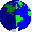
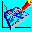

ГеоГраф™ ГИС - профессиональная геоинформационная система
ГеоКонструктор™ - пакет ActiveX-компонент для создания прикладных ГИС
GeoConstructor™ Web - средство для публикации карт ГеоГраф ГИС в Интернет
GeoDraw™ - вектоpный топологический pедактоp
ГеоГраф™ 1.5 - настольная ГИС конечного пользователя
Дополнительные приложения для ГеоГраф 1.5